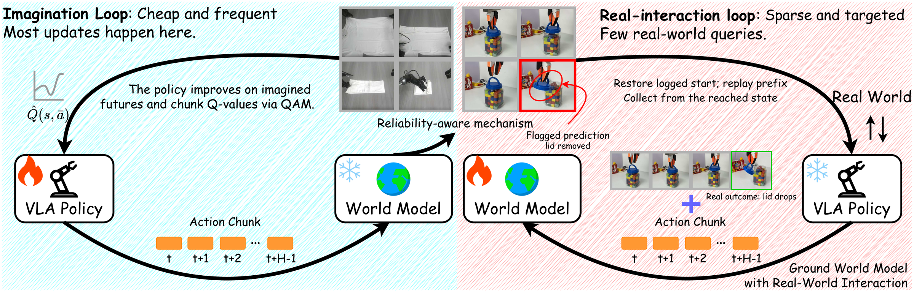
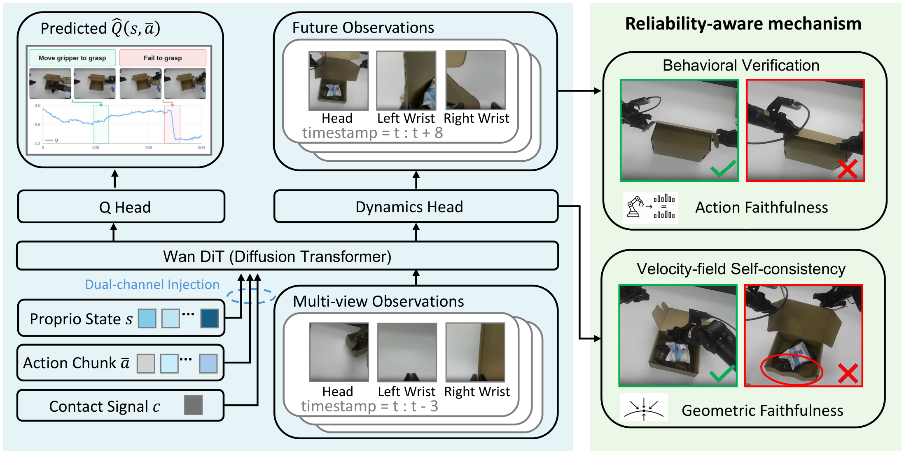
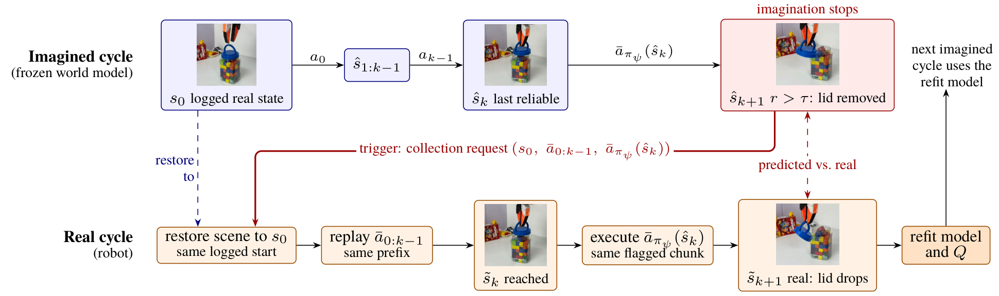
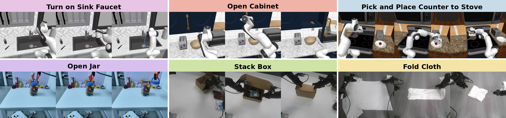

Robot policies can improve by practicing inside a learned world model, but the model is wrong in places, and practicing there teaches the policy behaviors that fail on the real robot. Fixing the model needs new real data, and the usual way to get it is to run the policy on the robot and refit; most of those rollouts, however, land on interactions the model already predicts well, and few reach the places where it is wrong. We present a method in which the world model's own prediction says how far it can be trusted. A reliability score, computed from the self-consistency of the flow model's velocity field and from whether the predicted motion follows the commanded action, is used twice: it weights each imagined policy update, and it selects the interactions at which real data is collected. The world model is a video transformer with a dynamics head and an action- and contact-conditioned value head on a shared backbone, and its action-value gradients drive policy improvement. A flagged interaction is reached on the robot by restoring the logged start and replaying the action prefix; the real outcome refits the model before the next round. On three simulation and three real-robot tasks, two rounds of 20 real rollouts improve success over the initial policy by 15.8–17.1 and 25.0–28.1 points and are ahead of DSRL and a VLAW reproduction on every task at the same rollout budget. Controlled studies show that both uses of the score contribute, and that the collected data corrects the model where it was flagged.

Two connected learning cycles. We score the reliability of every imagined prediction with two signals from the world model itself: the self-consistency of its velocity field, and whether the motion visible in the predicted frames follows the commanded action. The score both weights policy updates and chooses where real feedback is collected: it down-weights unreliable updates, and above a threshold it stops the imagined rollout and records the preceding interaction as a collection candidate. For selected candidates the robot restores the logged initial scene, replays the saved action prefix, and collects from the state actually reached; the new outcomes and the historical data update the dynamics and value estimates for the next round.

The world model is a shared video transformer with a dynamics head and an action- and contact-conditioned Q-head. It predicts future observations and action values, and Q-learning with adjoint matching (QAM) uses the action-value gradients to improve the policy. The reliability-aware mechanism scores each prediction with the two signals: velocity-field self-consistency (geometric faithfulness) and behavioral verification of the commanded action (action faithfulness).

A trigger is an imagined state. To obtain its real outcome, the robot reconstructs the history of the imagined rollout: it restores the logged start, replays the same action prefix, and executes the same flagged chunk, so that the real outcome answers the action the model was flagged on. The recorded trajectory joins the training set, and the world model and Q-head are refit before the next imagined cycle.

Three RoboCasa simulation tasks and three physical tasks on two robot platforms, each starting from 150 logged trajectories.
Imagined improvement alone raises success over π0 without new interaction, and each feedback round raises it further. After two rounds of 20 real rollouts the policy succeeds 15.8–17.1 points more often than π0 in simulation and 25.0–28.1 points more often on the real robot. DSRL and a VLAW reproduction (VLAW†) receive the same 40 real rollouts per task; Online 2 is ahead of both on every task.
| Task | π0 | DSRL | VLAW† | Imagined | Online 1 | Online 2 |
|---|---|---|---|---|---|---|
| SinkFaucet | 27.6 | 32.4 | 39.4 | 31.8 | 34.7 | 43.5 |
| OpenCabinet | 21.8 | 34.1 | 28.8 | 23.5 | 27.1 | 37.6 |
| PickPlace | 25.3 | 25.9 | 30.6 | 28.8 | 32.4 | 42.4 |
| OpenJar | 31.3 | 50.0 | 53.1 | 40.6 | 53.1 | 59.4 |
| StackBox | 6.3 | 18.8 | 21.9 | 12.5 | 25.0 | 34.4 |
| FoldCloth | 9.4 | 18.8 | 31.3 | 18.8 | 28.1 | 34.4 |
Success rate (%) over 170 simulation episodes or 32 real-robot trials per cell. Our three stages receive 0, 20, and 40 new real rollouts; the baselines receive 40.
Controlled studies in the paper separate the two uses of the score, show that the gate acts through which samples it down-weights, and show that the requested data corrects the model where it was flagged without forgetting elsewhere.
Select a task to compare a success and a failure rollout. Each clip shows the camera views together with the predicted value over the rollout: it rises toward completion on successes and drops as soon as the policy fails.
Success
Failure
Autonomous rollouts of the policy after two feedback rounds on the three physical tasks.